Retis Terminal public beta
User guide: install, sign in to tw-001, install Local yfinance, add data keys, and use the four Phemas
For Retis Terminal 0.1.6-beta (public beta) · Site: tw-001-olive-canyon.retis.ai · Updated 2026-11-19
Retis Terminal is an investment research app that runs on your own computer. You can follow Taiwan stock quotes and news, build trading strategies, backtest them on past prices, and practise with a paper account. No coding and no command line.
Each screen in Retis Terminal is called a Phema. tw-001 currently offers four: Getting started, Taiwan Semiconductor Watch, Strategy Monitor and Globe View. This guide first covers installing, signing in and installing Local yfinance, then walks through each Phema: what it is for, how to open it, what each control does and how to read the results.
Your data and keys stay on your computer. Workspaces, settings, kept results and data keys are stored on your computer. A key is sent only to that data vendor's hosts; Retis servers and agents never receive it. tw-001 keeps only your account, points and access records.
Beta notes: paper trading only. Nothing places real orders, and nothing here is investment advice. The installers are not signed yet, so the first launch shows a security prompt (section 1 explains it). If a label on your screen differs slightly from this guide, go by your screen.
What you need
- A Mac (macOS 12 or later, Apple silicon or Intel), or Windows 10 or 11 (64-bit). Local yfinance, which provides data for charts, news and backtests, runs only on Apple silicon Macs and Windows for now, and installing it needs an internet connection (about a 50 MB download).
- An email address you can receive mail at, for your tw-001 account.
- (Optional) your own data keys, for example a Fugle MarketData API key. Once Local yfinance is installed, the main features of all four Phemas work without one; a computer that can't run Local yfinance (such as an Intel Mac) needs a key for a price-history source such as Fugle. Section 4 shows how to add one.
1. Install Retis Terminal
Go to github.com/retis-ai-sg/retis-terminal-beta/releases/latest and download the installer under Assets. Download only from this repository's Releases. For every step with pictures, see Install on Mac and Install on Windows in the repository. It takes about 3 minutes. To build it from source yourself, see Appendix D.
Mac
- Download
Retis-Terminal-<version>.dmg (currently 0.1.6-beta), open it and drag Retis Terminal into Applications.
- Double-click Retis Terminal in Applications. This beta isn't signed by Apple yet, so the first time macOS says it can't verify the developer: choose Done (not Move to Trash), open System Settings → Privacy & Security, scroll down to Security, choose Open Anyway next to Retis Terminal, then Open. Only the first time.
- A Retis Terminal icon appears in the menu bar and your browser opens Retis Terminal. Click the icon to see the version, Open and Quit.
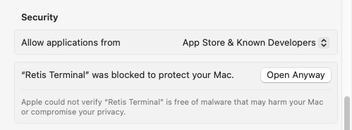
Choose Open Anyway in Privacy & Security the first time.
Windows
- Download
Retis-Terminal-Setup-<version>.exe and run it. If Windows says Windows protected your PC, choose More info → Run anyway, then Next, and Finish when it's done. No administrator rights are needed.
- To open it later, find Retis Terminal in the Start menu. An icon appears in the system tray (bottom right; Windows may first keep it under ^, Show hidden icons) and your browser opens Retis Terminal. Right-click the icon to see the version, Open and Quit.
 Run anyway after choosing More info.
Run anyway after choosing More info.
- Closing the browser tab doesn't quit Retis Terminal. To open it again, use the menu bar (Mac) or system tray (Windows) icon → Open. To quit, choose Quit.
- Updates: while it runs, Retis Terminal checks for a new version once a day. When there is one, a New version window appears and the icon's menu shows New version … → Download. Download it and install as above; your data and sign-in are kept.
2. Sign in and install Local yfinance
tw-001 is Retis's test site, where Retis Terminal gets its data and calculations. You create the account inside Retis Terminal; there is no separate website sign-up.
- Choose a language. The first time, Retis Terminal asks which language to use. This guide uses English. You can change it later in Terminal settings → Workspace → UI language.
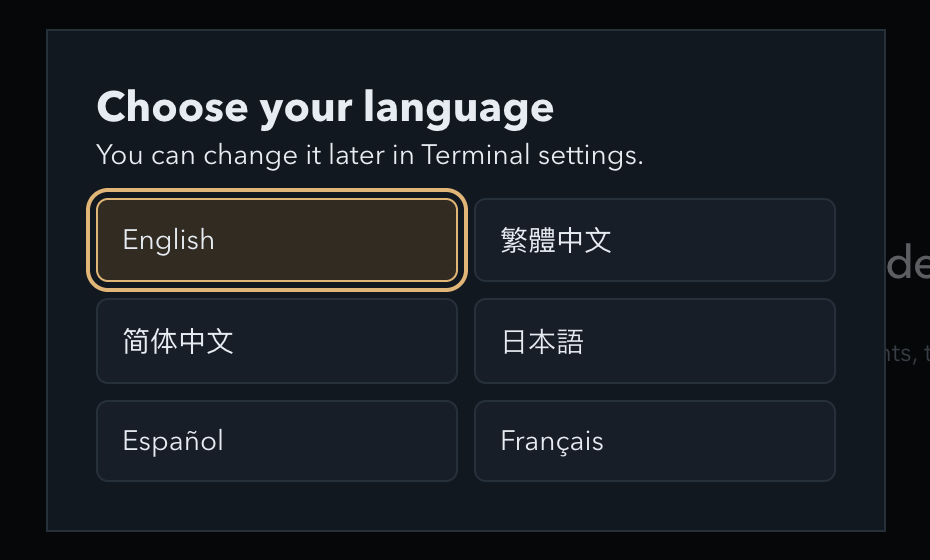
- Sign in or create an account. Terminal settings → Plaza account opens next, headed "Sign in to use tw-001-olive-canyon.retis.ai".
- New here: choose Create an account, fill in Email, Password and Name (optional), and choose Create account. Receive newsletter is ticked by default; untick it if you don't want it, or change it later under Terminal settings → Plaza account, where you can also pick the Newsletter language. Open the link in the confirmation email (check your spam folder if it isn't there), then come back and sign in.
- Already have an account: enter Account or email and Password, and choose Sign in.
After you sign in, this computer gets access automatically; nobody needs to approve it.
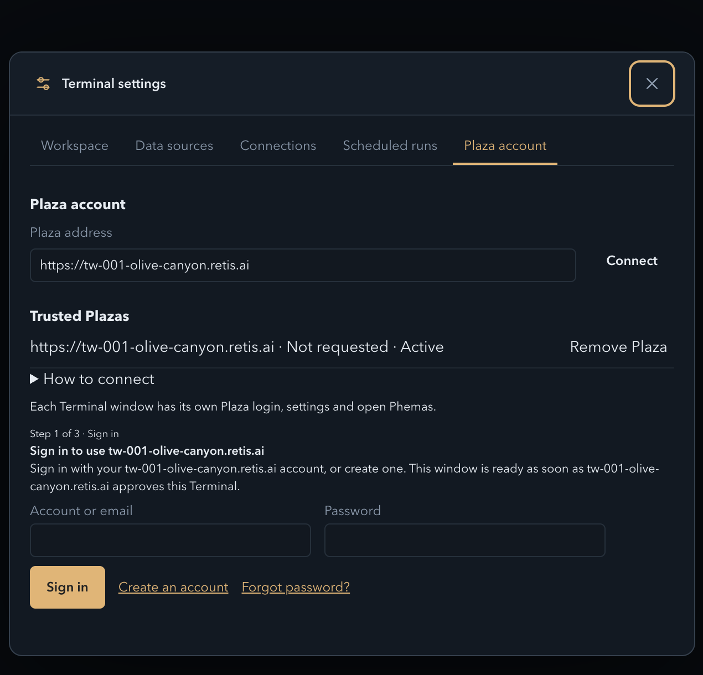
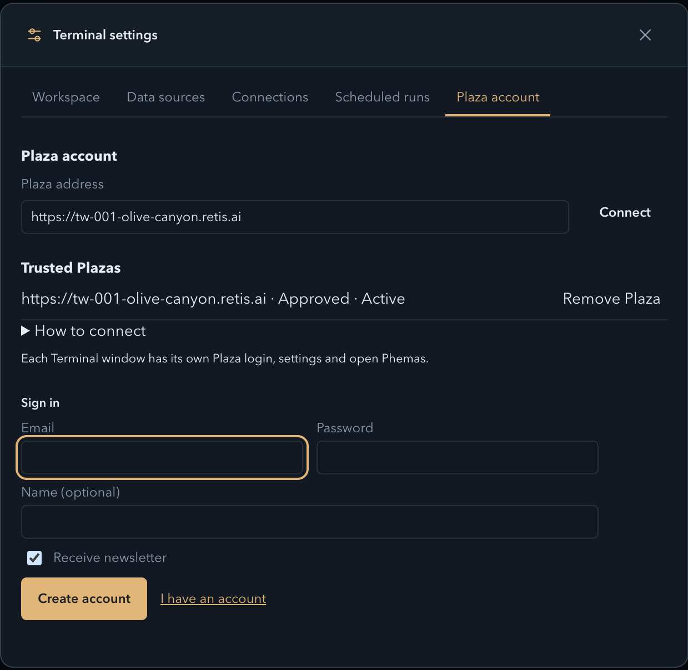
Left: sign in. Right: the form after choosing Create an account.
- Your first screen opens by itself. Retis Terminal sets up the Getting started workspace and opens Taiwan Semiconductor Watch, then Strategy Monitor (this can take about a minute). Then install Local yfinance as below.
- Points. A new account starts with 1,000 points and is topped back up to 1,000 on the 1st of each month (Taiwan time). Points have no cash value and are free during the beta. Quotes, news and price updates cost nothing; Appendix A lists what does.
Next time: double-click Retis Terminal (or icon → Open). It returns to your last workspace without signing in again.
Install Local yfinance and Local OpenStreetMap
Charts, news, company data, and Strategy Monitor's prices and backtests all need price history, which usually comes from Local yfinance on your own computer. Local yfinance is a small component that comes with Retis Terminal. Retis MAS Manager installs and starts it. It is free and costs no points. Until it is installed, the chart says "No price-history source is available to you. Install Local yfinance in Retis MAS Manager…", and the news asks you to install it too.
The same Retis MAS Manager also offers Local OpenStreetMap (optional): free OpenStreetMap standard and OpenTopoMap terrain maps for Globe View, with no key and no points. We suggest installing both: Local yfinance first (steps 1–5), then Local OpenStreetMap (steps 6–7).
You don't have to install it: charts, news and backtests can use any data source that provides that data. If you already have other sources (your own key added in Terminal settings → Data sources; see section 4), you can skip Local yfinance.
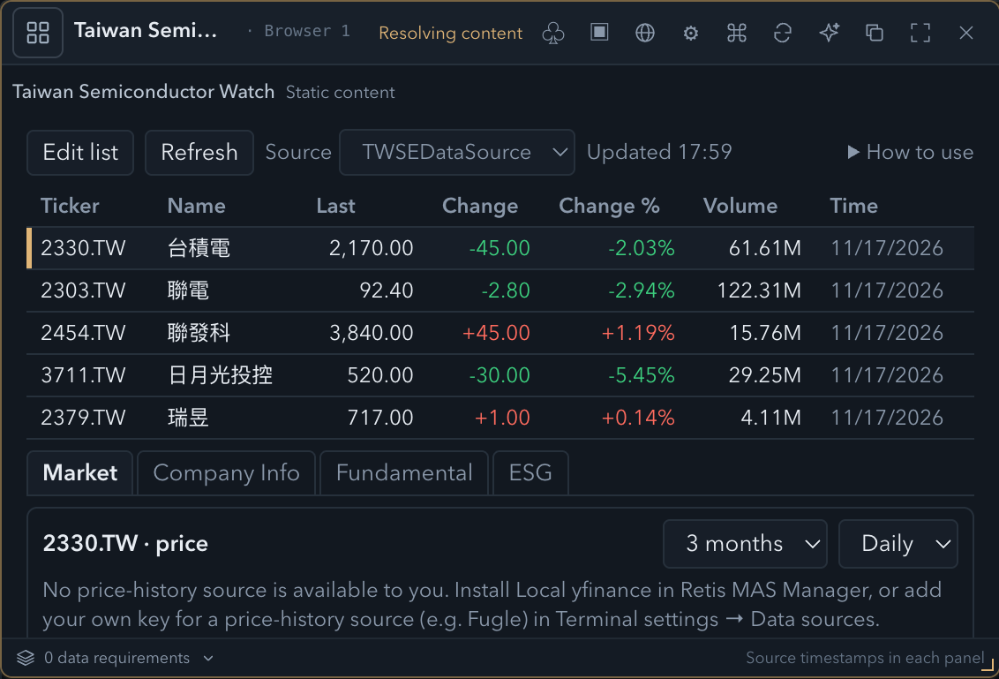
- In the sidebar, choose New Data Browser. In the Phema layouts window, On this computer lists Retis MAS Manager: select it and choose Open Retis MAS Manager.
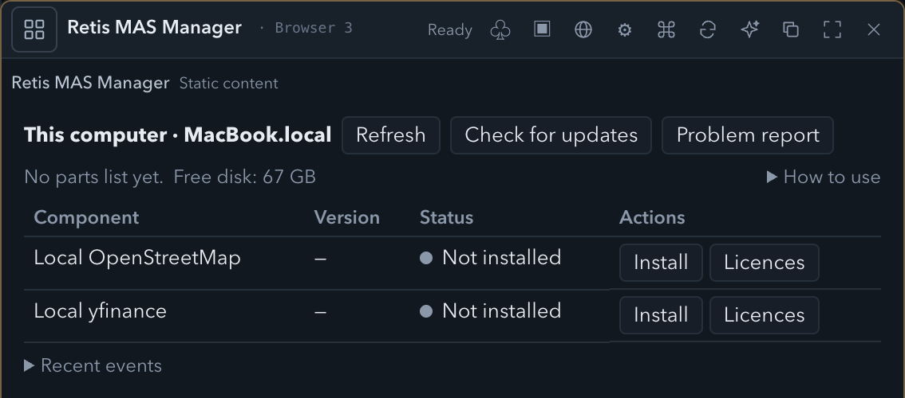
- On the Local yfinance row, choose Install. A note about Yahoo Finance data and yfinance appears first, with the list of libraries to download (Licences shows each library's licence). Read it, then choose Accept and install.
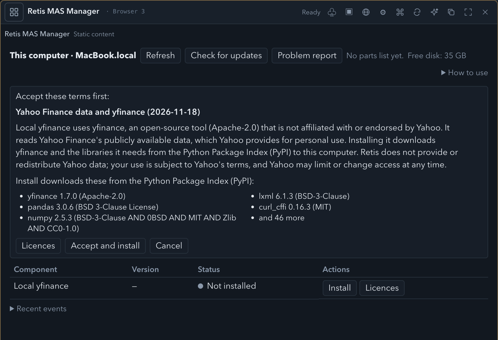
- Retis MAS Manager downloads yfinance and the libraries it needs from the Python Package Index (PyPI), about 50 MB, which take about 200 MB once installed; nothing comes from Retis. After about half a minute the status turns Running. If Windows asks whether to allow network access, allow it.
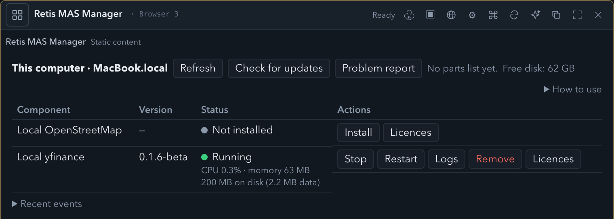
- Open Terminal settings → Connections: On this computer lists "Local yfinance · data-source · Running". The Data sources tab lists Local yfinance too (Public · no key required).
- If Taiwan Semiconductor Watch's chart or news still says there is no source, reload that browser from its title bar (↻).
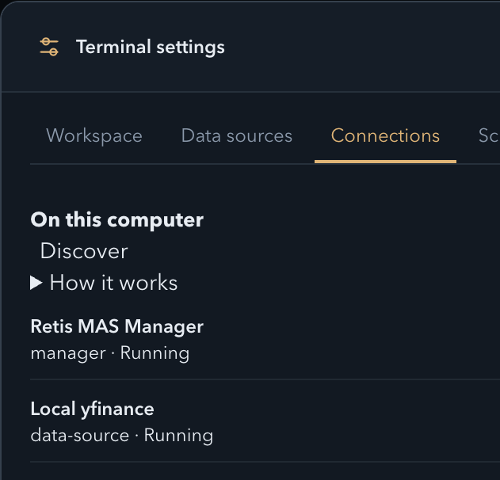
- (Optional) In the same Retis MAS Manager, choose Install on the Local OpenStreetMap row. It first shows the note "OpenStreetMap tiles and their usage policy" and the libraries it will download; read them, then choose Accept and install. It needs fewer libraries than Local yfinance, about 60 MB once installed, and turns Running after about half a minute.
- On this computer under Terminal settings → Connections now also lists "Local OpenStreetMap · data-source · Running". For using it in Globe View, see section 8.
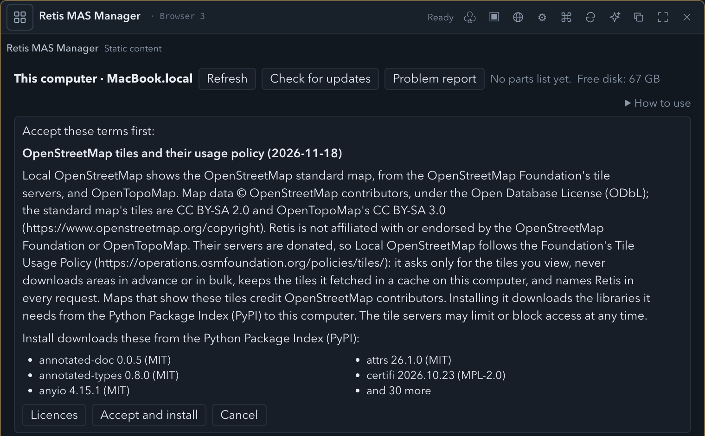
- Local yfinance and Local OpenStreetMap run only on this computer. They accept connections from this computer only and need no sign-in or pairing. Retis MAS Manager starts them when you log in to your computer; closing the Retis Terminal tab or choosing Quit leaves them running. To stop one, choose Stop on its row in Retis MAS Manager.
- If you can't install them: neither component has an Intel Mac build yet (the row says "Not offered for this computer"), and iPhone, iPad or a computer you can't install software on can't run it either. Add your own key for a price-history source such as Fugle under Terminal settings → Data sources instead (see section 4).
- About Yahoo's data: yfinance is an open-source tool, not affiliated with or endorsed by Yahoo. It reads Yahoo Finance's public data, which is for personal use; follow Yahoo's terms.
- About OpenStreetMap tiles: Local OpenStreetMap follows the OpenStreetMap Foundation's tile usage policy: it fetches only the tiles you look at, never downloads areas ahead or in bulk, and keeps the tiles it fetched in a cache on your computer. Map data © OpenStreetMap contributors (ODbL).
3. The screen and opening Phemas
This is the screen after your first sign-in. The sidebar is on the left; the open Data Browsers are on the right, and each Data Browser shows one Phema.
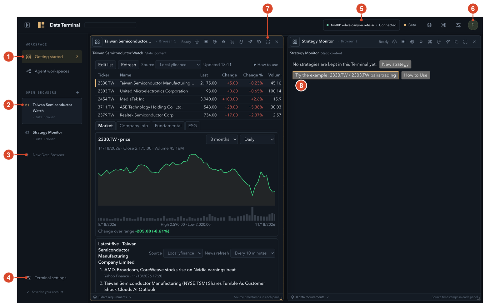
- Workspace: the current workspace (Getting started); the number is how many Data Browsers are open. Workspaces and layouts are saved automatically.
- Open browsers: click one to switch to that Data Browser.
- New Data Browser: open another Phema (see below).
- Terminal settings: language, data sources and keys, connections (components on this computer), Plaza account and points.
- Connection: "tw-001-olive-canyon.retis.ai / Connected" means all is well.
- Plaza account: your account icon, to see your account or sign out.
- Data Browser title bar: the buttons on the right reload the Phema (↻), focus it (⛶: fill the screen, with a tab for each browser along the bottom) or close it (×). Drag the title bar to move a browser, and its edges to resize.
- Try the example: Strategy Monitor's one-click example; see section 7.
Opening a Phema
- In the sidebar, choose New Data Browser. The Phema layouts window opens: On this computer shows Retis MAS Manager on your computer, and Catalog lists the 4 Phemas tw-001 offers.
- Click one to see its description. Leave Source mode on Parameters (live data). Snapshot opens content kept earlier that no longer updates; View Content lets you check it first.
- Under Open layout in, choose New Data Browser (open another) or Current Data Browser (replace this one), then Open <name>.
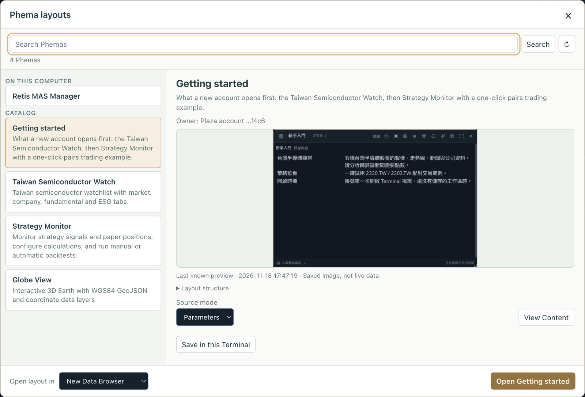
| Phema | What it's for | Key needed? | Points |
|---|
| Getting started | What a new account opens first: Taiwan Semiconductor Watch, then Strategy Monitor. | No | 0 |
| Taiwan Semiconductor Watch | Quotes, charts, news, company data and fundamentals for five Taiwan chip stocks; ask analysts about the news. | No; charts and news use Local yfinance or another source that provides them | Data 0; analyst comment 3–4 each |
| Strategy Monitor | Build strategies, watch live signals, backtest and paper trade. | No; prices and backtests use Local yfinance, or Fugle with your key | Create, refresh 0; backtest 5; each running step 10 |
| Globe View | A 3D globe or flat map with layers: values by country, earthquakes, air quality, map tiles. | Values by country: no. Map tiles, earthquakes, air quality: yes | 0 |
4. Your own keys (optional)
Most features work without a key: quotes come from the Taiwan Stock Exchange (TWSE) and the Taipei Exchange (TPEx), and price history and news come from Local yfinance on your computer (see section 2). If you have your own data vendor key, add it in Terminal settings → Data sources and Retis Terminal fetches straight from that vendor with your key.
- Open Terminal settings (bottom left) and choose the Data sources tab. It lists the data sources you can use, including Local yfinance and Local OpenStreetMap on your computer.
- "Public · no key required" sources work as they are.
- "Use my key" sources need your own key; until you add one they show "Not accessible".
- Click the source's row (for example FugleDataSource), open Advanced: manual API key connection, paste your key into API key, and choose Save source.
- Once saved, the row shows "Saved key: …" (only part of it) and the hosts it is sent to, such as "Sent only to api.fugle.tw". Retis Terminal sends the key only to the hosts listed there; if the vendor later uses another host, you are asked to save the key again.
- To remove a key, tick Remove saved key and choose Save source.
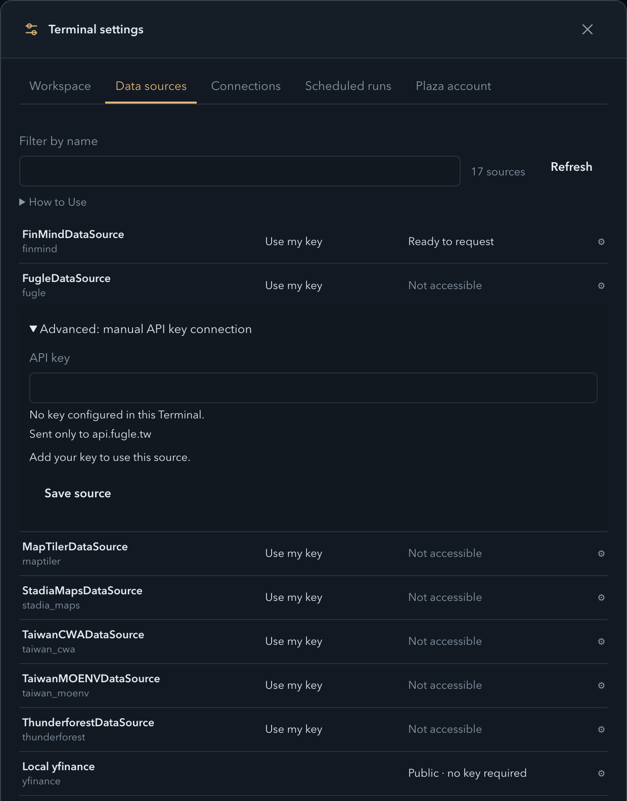
| Data source (name in the list) | Used for |
|---|
| Local yfinance (Public · no key required) | Quotes, charts, news, company data and fundamentals in Taiwan Semiconductor Watch; prices and backtests in Strategy Monitor. Runs on your computer; see section 2. |
| Local OpenStreetMap (no key required) | The OpenStreetMap standard map and the OpenTopoMap terrain map in Globe View. Runs on your computer; see section 2. |
| FugleDataSource (Fugle MarketData API) | Quotes, charts and company data in Taiwan Semiconductor Watch; price source and backtests in Strategy Monitor, including index and stock futures (for example CDF.TAIFEX, TSMC futures, near-month continuous). Use it instead of Local yfinance on a computer that can't run Local yfinance. Get a key: Fugle MarketData API plans (partner link). |
| Other data sources (for example Bloomberg, LSEG, Alpha Vantage, FinMind) | Not just Fugle: any source with an API, or a package installed on your computer like yfinance, can be connected to Retis Terminal. Email the one you want to datasources@retis.ai (see below). |
| StadiaMapsDataSource, MapTilerDataSource, ThunderforestDataSource | Map tiles (street, terrain and more) in Globe View. Using them in Retis needs that provider's paid plan; see section 8. |
| TaiwanCWADataSource (Central Weather Administration) | Earthquake and station temperature layers in Globe View. Needs a CWA authorization code. |
| TaiwanMOENVDataSource (Ministry of Environment) | Air quality layer in Globe View. Needs a MOENV API key. |
| LLM keys: Anthropic, OpenAI (bottom of the list) | Analyst comments in Taiwan Semiconductor Watch are written with your own key, for fewer points. |
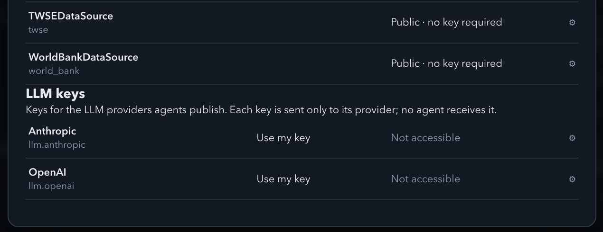
Need another data source? You can request any data source: a provider with an API, such as Bloomberg, LSEG, Alpha Vantage or FinMind, or a package installed on your computer like yfinance. If the one you want isn't listed under Terminal settings → Data sources, email datasources@retis.ai with the provider's name and the data you need (for example markets, instruments or fields). Don't include your key in the email.
How keys are kept: "Your keys stay in this Terminal and are sent only to vendor APIs. Agents never receive them." Data you fetch with your own key is between you and the vendor; it doesn't go through Retis and costs no Retis points.
Each Retis Terminal window has its own sign-in and settings. If you open another Retis Terminal tab in your browser, that tab shows "Your key for this source is saved in another Terminal window." Switch back to the first tab, or enter the key again in the new one.
5. Getting started
What it's for: Getting started decides what a new account sees first. When a Retis Terminal window has no saved workspace, it opens the Phemas on its list: Taiwan Semiconductor Watch, then Strategy Monitor. You don't need to do anything with it, and it costs no points.
Opening it: it runs by itself at your first sign-in. To look at it, choose New Data Browser → Getting started → Open Getting started. On its own it shows a short three-row table:
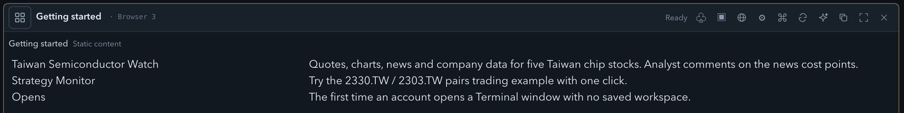
| Row | Meaning |
|---|
| Taiwan Semiconductor Watch | Quotes, charts, news and company data for five Taiwan chip stocks. Analyst comments on the news cost points. See section 6. |
| Strategy Monitor | Try the 2330.TW / 2303.TW pairs trading example with one click. See section 7. |
| Opens | The first time an account opens a Terminal window with no saved workspace. |
If you close Taiwan Semiconductor Watch or Strategy Monitor, you can open them again from New Data Browser at any time.
6. Taiwan Semiconductor Watch
What it's for: five Taiwan chip stocks at a glance: TSMC (2330.TW), UMC (2303.TW), MediaTek (2454.TW), ASE Technology (3711.TW) and Realtek (2379.TW). See quotes, price charts, the latest news, company data and fundamentals, and ask analysts what they make of the news. Looking at data is free; only analyst comments use points.
Opening it: it opens at your first sign-in, or choose New Data Browser → Taiwan Semiconductor Watch. While it is open, quotes refresh every 2 minutes.
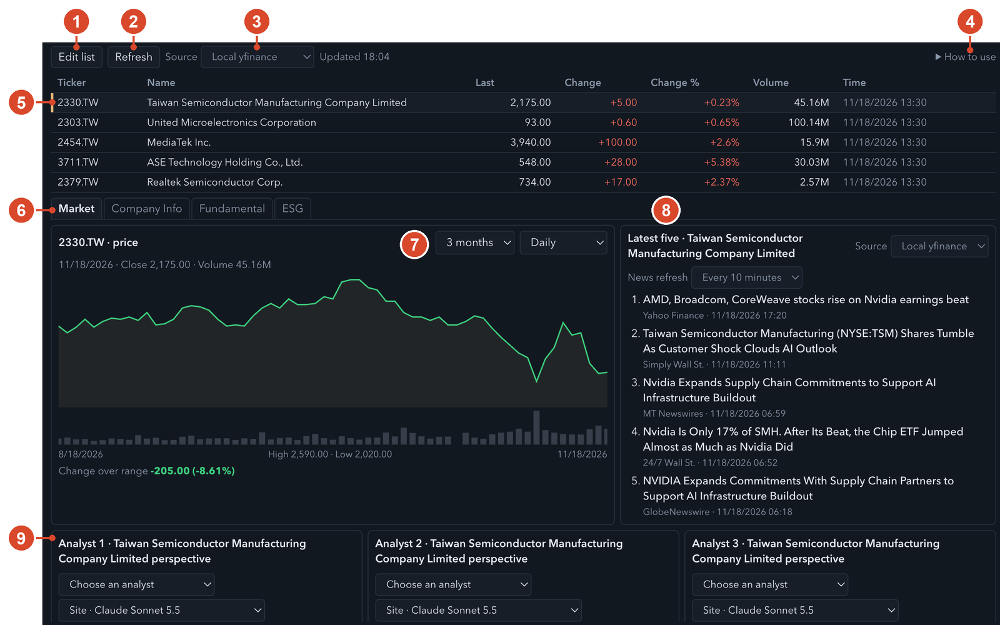
- Edit list: change the stocks you watch. Enter 1 to 12 tickers separated by commas (for example
2330.TW, 6488.TWO: .TW for listed stocks, .TWO for OTC stocks) and choose Apply. Restore defaults brings back the original five; Cancel changes nothing.
- Refresh: reload everything now. "Updated" beside it is the time of the last update.
- Source: where quotes come from: TWSEDataSource, TPExDataSource or Local yfinance. Fugle joins the list once you save a Fugle key.
- How to use: opens the built-in help.
- Watchlist: ticker, name, last price, change, change %, volume and quote time. Click a row to show that stock's chart, news and company data below.
- Tabs: Market, Company Info, Fundamental and ESG (see below).
- Range and interval: range from 5 days to 1 year; interval from 1 minute to monthly. Hover over the chart to see that day's close and volume; below it are the high, low and change over the range.
- Latest five: the newest news items for that stock, from Local yfinance. News refresh can be on request or every 1, 5, 10, 15, 30 or 60 minutes. News for TSMC, UMC and ASE also covers their US listings (TSM, UMC, ASX).
- Analyst cards: ask an analyst about the news on screen (see below).
Company Info, Fundamental and ESG
- Company Info: the selected stock's name, Chinese and English names, sector, industry, country, website, currency and an About summary.
- Fundamental: market cap, EPS (TTM), P/E, P/B, dividend yield and 52-week low and high for every stock in the list, side by side.
- ESG: tw-001 has no ESG data source yet, so this tab says "No source available to you on this site offers ESG data".
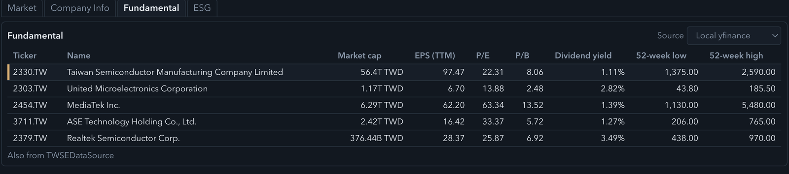
Asking an analyst
Below the Market tab are three analyst cards; each can ask one analyst about the news shown. The analysts are fictional research personas, and what they say is not investment advice.
- Choose an analyst: each entry shows the points for one ask, such as "Cyrus Vale · 3 points". The ⓘ explains the cost.
- Written by: Site · Claude Sonnet 5.5 uses tw-001's model. If you saved your own Anthropic or OpenAI key in Terminal settings, choose "My … key" instead, for fewer points.
- When to ask: Only when asked (recommended), With each news refresh, or Every N minutes. The last two ask again automatically and charge points each time.
- Choose Ask. Within about a minute the comment appears, ending with the time and the points actually charged, such as "Asked 05:49 · 3 points". Nothing is charged if a step fails. The last comment stays when you reopen the screen, without charging again.
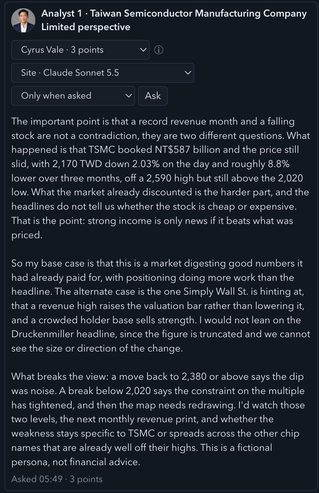
| Analyst | Site model | Your own LLM key |
|---|
| Cyrus Vale, Mara Whitestone, Selene Cross | 3 points | 1 point |
| Naomi Takahashi | 4 points | 2 points |
7. Strategy Monitor
What it's for: build trading strategies, watch live entry and exit signals, backtest on past prices, and practise placing and closing orders with a paper account. Paper trading only; it never places real orders.
Opening it: it opens at your first sign-in, or choose New Data Browser → Strategy Monitor.
Strategy handbook: for how each strategy template works, its parameters and worked backtests, and the full pairs trading settings, see the Retis Terminal Strategy Monitor handbook (in Chinese for now). This chapter covers the basics.
What is pairs trading?
Pairs trading watches two stocks that usually move together, such as TSMC (2330.TW) and UMC (2303.TW). The gap between them sometimes widens and then closes again. When the spread is unusually low, the strategy enters by buying the primary stock and selling the reference stock; when the spread returns to normal, it exits both.
- Hedged spread: primary price − signal hedge ratio × reference price.
- Spread z-score: how many standard deviations today's spread is from its average over a recent period (20 bars by default). The lower the number, the more unusually low the spread.
- Entry and exit z-score: a z-score at or below the entry value (default −2) gives an entry signal; at or above the exit value (default 0) gives an exit signal.
7.1 Try the example
- The first time, the screen is empty. Choose Try the example: 2330.TW / 2303.TW pairs trading. It creates a ready-made pairs strategy with prices from Local yfinance on your computer (free).
- Choose Refresh; the Monitor tab shows both stocks' latest prices (if it still shows "—", wait a few seconds and refresh again). Creating the example and refreshing prices cost nothing.
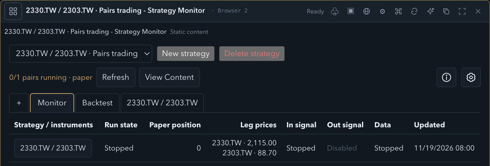
Across the top, left to right: the strategy list, New strategy and Delete strategy; on the next row the run state (such as "0/1 pairs running · paper"), Refresh, View Content (the saved strategy definition), and on the right ⓘ (How to Use) and ⚙ Strategy settings. The tabs are:
- +: add a pair (it copies the current settings and stays stopped).
- Monitor: every pair's run state, paper position, leg prices, in and out signals, data state and update time.
- Backtest: replay the strategy on past prices (see 7.5).
- One tab per pair (for example 2330.TW / 2303.TW): start, stop, watch signals and paper trade (see 7.2).
"Strategies are kept with this window in your Terminal. Closing the window removes them." Another Retis Terminal tab in your browser is a different window and doesn't show these strategies.
7.2 Start, signals and paper orders
Click the pair's tab and choose Start. The strategy fetches new prices and recalculates its signals, about every 2 minutes by default.
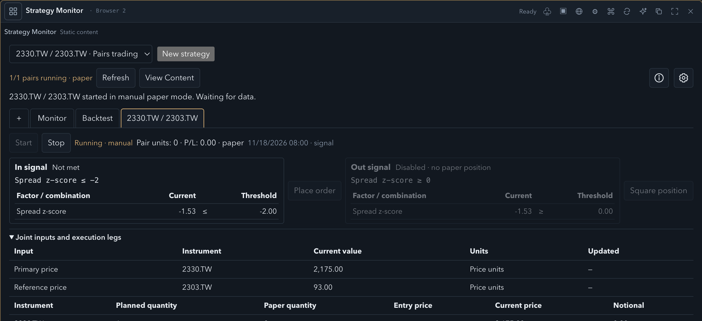
- In signal / Out signal: the rule (such as "Spread z-score ≤ -2"), with the Current value and the Threshold. Above, the z-score is −1.53, not yet below −2. The screenshot was taken outside trading hours, so the prices are marked stale and the in signal shows "Unavailable"; signals need fresh prices.
- Joint inputs and execution legs: both stocks' current prices, planned quantities (primary 1, reference −1), paper quantities, entry prices and notional values; the calculation table below lists the primary and reference weighted values, the hedged spread, the spread z-score and the paper position's P/L.
- Place order: available only while running, with no paper position, fresh data and the entry condition met. The strategy never orders by itself: Place order opens a paper order ticket where you can change the Paper order price and Paper order amount, then Place paper order.
- Square position: available when you hold a paper position; it opens the same kind of ticket.
- Stop: stops running and keeps the paper position.
Points: each running step costs 10 points, about every 2 minutes, so roughly 300 an hour; Place order and Square position are also 10 each. Stop is free. 1,000 points last about 3 hours of continuous running. Closing the screen doesn't stop a run, so choose Stop when you're done. When points run out the run pauses until the monthly top-up.
7.3 New strategy and templates
Choose New strategy, pick a Template, fill in Primary stock (and Reference stock for pairs), pick a Price source, and choose Create. Name is optional; by default it is the tickers plus the template name. Creating a strategy is free.
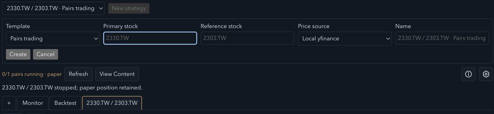
- Tickers: listed stocks end in
.TW (for example 2330.TW), OTC stocks in .TWO (for example 6488.TWO).
- Price source: by default Local yfinance (free). After you save a Fugle key in Terminal settings → Data sources, FugleDataSource appears in the same window; if it doesn't, reopen Strategy Monitor.
| Template | Defaults | Entry / exit |
|---|
| Moving-average crossover | Fast EMA 20, slow EMA 50 | Enter when the fast line crosses above the slow line; exit when it crosses below. |
| Momentum | Period 20, entry return 0, exit return 0 | Enter when close ÷ close 20 bars ago − 1 is above the entry value; exit at or below the exit value. |
| Channel breakout | Entry channel 20, exit channel 10 | Enter when the close is above the highest close of the previous 20 bars; exit below the lowest close of the previous 10. |
| RSI mean reversion | Period 14, entry 30, exit 70 | Enter when RSI crosses above 30; exit at 70 or above. |
| Bollinger mean reversion | Period 20, 2 standard deviations | Enter when the close crosses back above the lower band; exit at or above the middle band. |
| Volatility squeeze breakout | Period 20, 2 standard deviations, maximum band width 0.05 | Enter when the previous bar's band width is below 0.05 and the close crosses above the previous upper band; exit below the middle band. |
| VWAP trading | Time zone UTC, session start 00:00 | Enter when the price crosses above the session VWAP; exit when it crosses below. Suited to intraday bars. |
| Pairs trading | Calculation period 20, entry z-score −2, exit z-score 0, signal hedge ratio 1 | At a spread z-score of −2 or lower, buy the primary and sell the reference; exit both at 0 or higher. |
All templates go long only (pairs trading is long the primary stock and short the reference stock).
Deleting a strategy: pick it in the strategy list and choose Delete strategy beside it. When the question appears under the list, choose Delete (or Cancel to keep it). Its pairs, paper simulation, Backtest settings and saved backtests go with it, and this can't be undone.
7.4 Strategy settings
Choose ⚙ Strategy settings at the top right. The simplest way to change parameters:
- Under Settings from Strategy Producer, pick a template (for example Pairs trading); Template parameters appears below.
- Fill in the parameters. For pairs, Reference stock is required and must differ from the primary; the entry z-score must be below the exit z-score.
- Choose Load settings, check the fields and signals below, then Apply configuration. If the strategy is running or holds a position, the button becomes "Clear position and apply settings" and lets you square the position at current prices or clear the paper run.
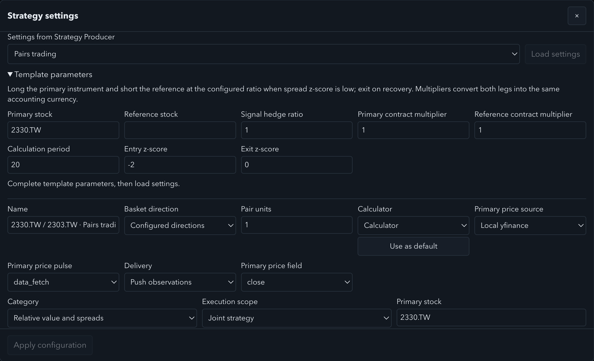
- Signal hedge ratio: default 1. When the two prices are far apart (2330 around 2,175, 2303 around 93), set it to roughly primary price ÷ reference price (about 23 here) so the spread reflects relative moves.
- Calculation period: how many bars the average and standard deviation use; default 20.
- Execution and accounting: add a Fee per filled unit and Slippage (bps). Both default to 0.
7.5 Backtest
A backtest replays the strategy on past prices to show how it would have entered and exited. Each backtest costs 5 points (manual or automatic).
- Open the Backtest tab and choose Manual. Under Test settings, check the legs: the primary stock quantity is 1, and the reference quantity follows Sizing.
- Balance at entry prices (default): the reference quantity makes both sides roughly equal in value.
- Fixed quantities: set both quantities yourself.
- Set Test period to Start / end. The default is the last 30 days; pairs trading needs 20 bars before its first signal, so a short period may give no trades. Start with the last 6 months. Use
1d (daily bars) for Tick / bar interval.
- Each Historical source defaults to "Local yfinance · data_fetch · Free"; with a Fugle key you can pick Fugle (marked "Your key"). The field beside it defaults to
adjustedClose (adjusted close), which avoids jumps from dividends and splits; a stock-versus-futures pair defaults to close (see 7.6). Choose Run backtest; results appear in about 15 seconds.
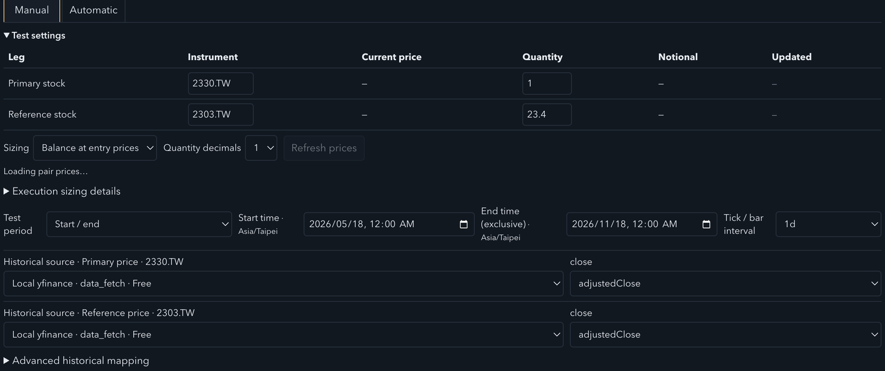
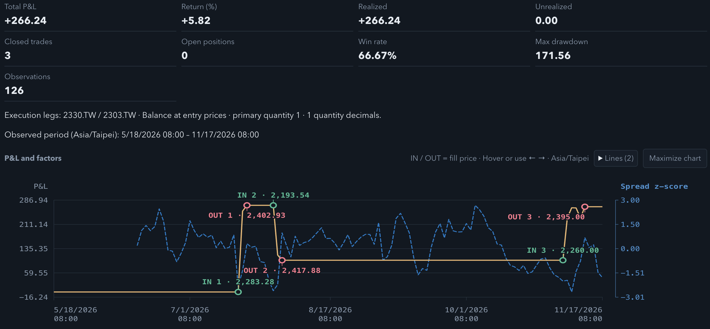
2330.TW / 2303.TW over the last 6 months (daily bars, adjusted close, Local yfinance), with the spread z-score added from the Lines menu. An illustration only; past results don't predict the future.
| Result | Meaning |
|---|
| Total P&L | Realized plus unrealized profit and loss, in price units (TWD for Taiwan stocks). |
| Return (%) | Total P&L relative to the amount at entry. |
| Realized / Unrealized | P&L of closed trades / positions still open at the end, valued at the last price. |
| Closed trades, Open positions | Completed round trips in the period, and positions still open at the end. |
| Win rate | Share of closed trades that made money. |
| Max drawdown | The largest fall of cumulative P&L from a high. |
| Observations | The number of bars used. |
- Chart: on the Cumulative P&L chart, IN and OUT marks are entries and exits, labelled with the fill price. Lines adds the spread z-score, hedged spread, either price and more; Maximize chart enlarges it. The Pair price scatter below plots the two prices with a regression line ±2σ.
- Trades: below the charts, each trade's entry and exit time, prices, pair units and P&L.
- Saving: Save backtest keeps the report in this window (up to 20 per strategy); reopen it from the saved backtest report list. Unsaved runs are deleted when you leave the tab. Expand Report content and source lineage to see where every price came from.
- Deleting a saved backtest: pick it in the saved backtest report list, choose Delete saved backtest next to Download report, then Delete to confirm.
- Space: each Strategy Monitor keeps about 40 to 50 strategies with their backtests. From about three quarters full a yellow note says how full it is; when it's full, New strategy, adding a pair and Save backtest say so. Delete strategies or backtests you no longer need, then try again.
Automatic backtest
Choose Automatic: between Sampling start and Sampling end (exclusive) (the last year by default) it picks several random start times and lengths and runs each, to show whether the strategy only worked in one stretch. The same number in Random seed (optional) gives exactly the same result; a different number draws different periods. Choose Run automatic backtest; it also costs 5 points.
Backtest assumptions: fills at the price of the bar that triggered the signal; no commission, transaction tax or slippage (you can add fees and slippage in Strategy settings, but there is no tax field); single stocks enter 1 share at a time. yfinance has 1-minute bars for only the last 30 days and other intraday bars for the last 60.
7.6 Using Fugle data (optional)
Once you save a Fugle key in Terminal settings → Data sources, you can pick FugleDataSource as the price source in New strategy and as the historical source in backtests (marked "Your key"). Fugle data is between you and Fugle and costs no Retis data points; the strategy's own points (backtest 5, each step 10) stay the same. No Fugle key yet? See section 4.
- Fugle limits one request to under a year; for longer backtest periods Retis Terminal splits the request for you.
- Fugle also has futures history, so you can pair a stock with its futures, for example primary
2330.TW and reference CDF.TAIFEX (TSMC futures, near-month continuous; for Fugle's futures plans, see Appendix E). A stock-versus-futures pair defaults both legs and the backtest's price field to close; keep it that way: futures have no adjusted price, and an adjusted stock price against a raw futures price distorts the spread around dividends. The near-month series jumps at each monthly roll, which can affect the spread, z-score and backtest results.
8. Globe View
What it's for: layers of data on a 3D globe or a flat map, such as values by country, borders and other features, earthquakes, air quality and map tiles. Globe View costs no points.
Opening it: choose New Data Browser → Globe View → Open Globe View. It starts with a Natural Earth base map drawn on your computer.
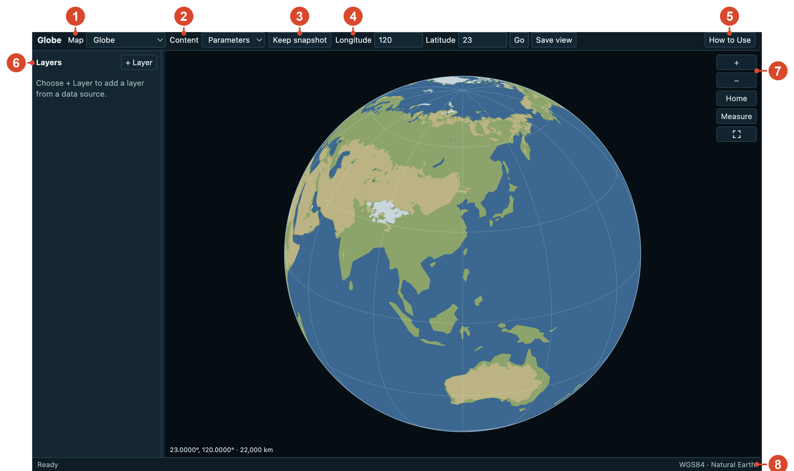
- Map: Globe, or flat Equirectangular, Mercator, Equal Earth, Robinson and Mollweide projections. Drag to rotate or pan.
- Content: Parameters is live; Snapshot is read-only content kept earlier. Pick one and choose View Content.
- Keep snapshot: save the current layers as a read-only snapshot.
- Longitude, Latitude, Go, Save view: enter coordinates and choose Go; Save view remembers the current position.
- How to Use: the built-in help.
- Layers: choose + Layer to add a layer from a data source (see below).
- Map buttons: zoom in (+), zoom out (−), Home, Measure (drag on the map to measure a distance; Esc to finish), and maximize (four arrows).
- Credits: shows the source and copyright line of each visible tile layer; with no tile layers it shows "WGS84 · Natural Earth".
Adding a layer
- Choose + Layer and pick a Source. Below it you see the source's own description and how this kind of layer is drawn.
- Fill in the source's fields (such as the indicator and period, or the map style under Collection), then choose Add layer.
| Name in the list | What it draws | Key needed? |
|---|
World Bank Indicators Data Source · Values by region
OECD Data Explorer Data Source · Values by region
IMF Data Source · Values by region | One value per country (such as population or GDP growth), shaded by quintile from light (lowest) to dark (highest). | No |
| Natural Earth · Features | Borders, coastlines and other geographic features. | No |
| Taiwan Weather (CWA) Data Source · Observations · Earthquakes / Station temperature | Earthquakes and station temperatures from Taiwan's Central Weather Administration. | CWA authorization code |
| Taiwan Environment (MOENV) Data Source · Observations | Air quality (AQI) from Taiwan's Ministry of Environment. | MOENV API key |
| Local OpenStreetMap · Map tiles · Standard / Topographic | The OpenStreetMap standard map and the OpenTopoMap terrain map, drawn under the data layers. See below. | No (install Local OpenStreetMap) |
| Stadia Maps / MapTiler / Thunderforest Data Source · Map tiles | Street, terrain, satellite and other map tiles, drawn under the data layers. | Your key and a paid plan |
For example, pick World Bank, keep the default indicator SP.POP.TOTL (population) and choose Add layer: each country is shaded by population. The picture below switches to the Robinson projection and opens the layer's details.
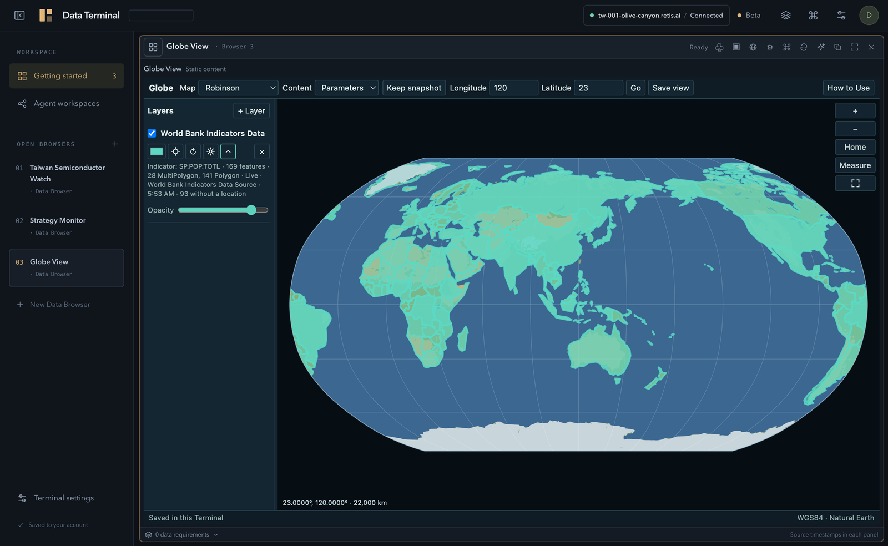
Each layer has a row: a checkbox to show or hide it, then colour, zoom to layer, ↻ refresh, ⚙ layer settings (show only matching features, label by a property, label font), details (including opacity) and × remove. Layers and the view are kept in this Retis Terminal ("Saved in this Terminal").
Free maps: Local OpenStreetMap layers
With Local OpenStreetMap installed (see section 2), Globe View can add two free maps: Standard (the OpenStreetMap standard map: roads, place names and buildings) and Topographic (the OpenTopoMap terrain map: contour lines and hill shading). No key and no points.
- Open Globe View. Enter
121.56 as the Longitude and 25.04 as the Latitude, choose Go, and zoom in with the map's + button until you see Taipei's streets.
- Choose + Layer, pick Local OpenStreetMap · Map tiles · Standard as the Source (its Collection is Street map), then choose Add layer. Tiles load only for the area you see, and new ones come as you zoom or move; a place you look at for the first time is a little slower, after that the tiles come from the cache on your computer.
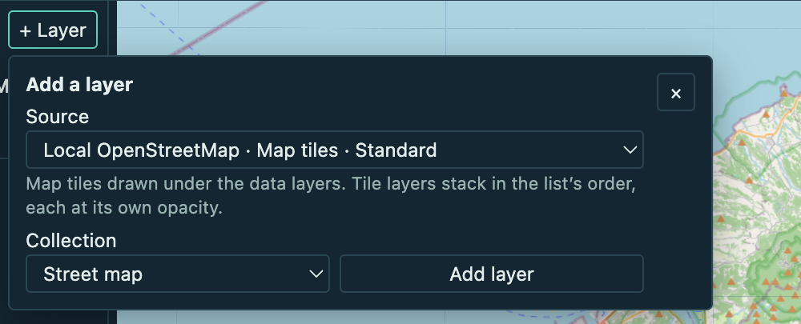
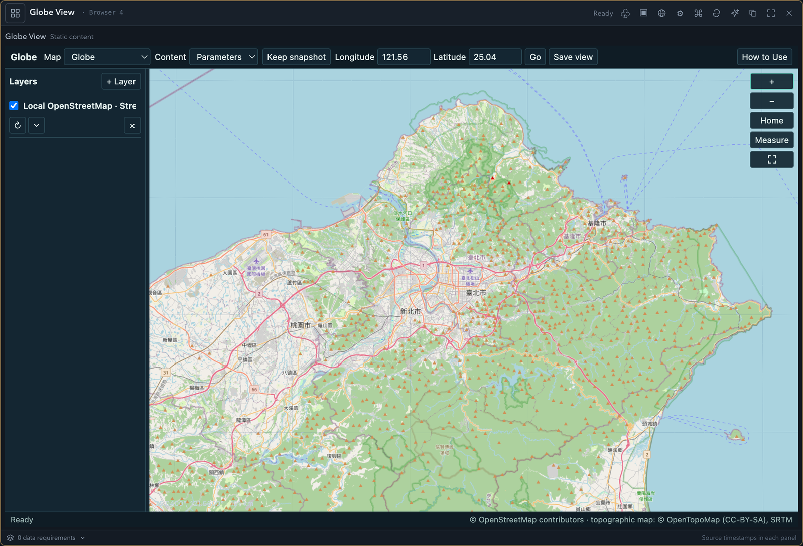
- Choose + Layer again, pick Local OpenStreetMap · Map tiles · Topographic (Collection Topographic map), and choose Add layer. Mountains show the difference best, for example Taiwan's Central Mountain Range (longitude
121.0, latitude 23.5).
- Arrange them: tile layers stack in list order, all under the data layers. Open a layer's details to change its Opacity; set one layer to about half to see streets and terrain together. Use its checkbox to hide or show a layer.
- Add data on top: for example add the World Bank population layer, and the country colours draw over the map; lower that layer's opacity if the map underneath is hard to see.
- Credits: the bottom right names OpenStreetMap's contributors (for example "© OpenStreetMap contributors"). Click it to open Credits and licences for the licence notes.
- If no tiles appear, check that Local OpenStreetMap shows Running in Retis MAS Manager, then choose ↻ on the layer to refresh it. Remove a layer you don't need with ×. Layers and the view are kept in this Retis Terminal.
These tile servers run on donations, so browse as you normally would, without long fast drags or repeated big zooms.
Other map tiles need your key and a paid plan
Stadia Maps, MapTiler and Thunderforest tiles are read only with your own key, fetched by your Retis Terminal straight from the provider. Their free plans are for non-commercial use; using them in Retis needs that provider's paid plan, so check each provider's plans and terms first.
- Stadia Maps: Smooth, Smooth dark, Bright, Outdoors, Terrain, Toner.
- MapTiler: Streets, Outdoor, Topographic, Basic, Satellite.
- Thunderforest: Cycle, Transport, Landscape, Outdoors, Atlas, Neighbourhood.
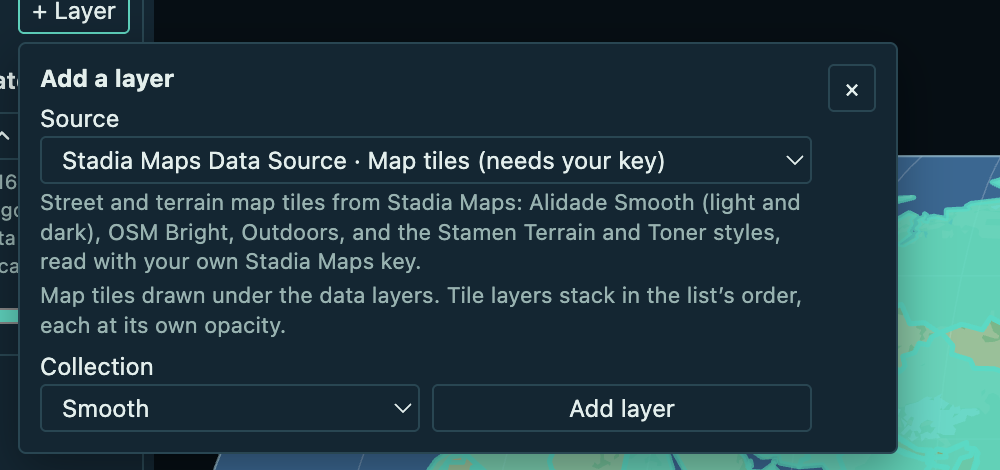
Without a saved key the list shows "(needs your key)", and Add layer shows the message below. Save the key in the StadiaMapsDataSource (or other) row of Terminal settings → Data sources (see section 4), then add the layer again.
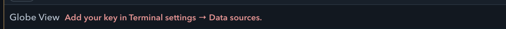
Once a tile layer is added, the credits at the bottom right name its source, for example "© Stadia Maps © OpenMapTiles © OpenStreetMap contributors". Tile layers stack under the data layers in list order, each with its own opacity.
9. Testing and reporting with an AI agent (optional)
You can point an AI coding agent, such as Anthropic's Claude Code or OpenAI's Codex, at Retis Terminal's public repository and have it look things up in the docs, read the source, write up your test notes, and draft issues and discussions for you. They are command-line tools that run on your computer with your own accounts and your GitHub identity; Retis Terminal doesn't need them.
Set up
- Install Claude Code or Codex, and the GitHub CLI (
gh). On Windows, run the commands below in Command Prompt or PowerShell.
- Sign in to GitHub (reporting needs a free GitHub account):
gh auth login
- Get the repository and start the agent in its folder:
gh repo clone retis-ai-sg/retis-terminal-beta
cd retis-terminal-beta
claude
For Codex, type codex on the last line instead.
- Have it read the docs first, for example: "Read README.md and docs/en, then answer my questions about Retis Terminal."
What you can ask it to do
Report a problem (issue)
- Have it draft the fields of the 問題 / Problem form: what happened (what you did, what you expected, what you saw), your computer (Mac or Windows), the version (first line of the icon menu) and your browser.
- Read the draft, make sure it holds no password, key or local sign-in link, then have it create the issue:
gh issue create --repo retis-ai-sg/retis-terminal-beta --label 問題 --title "Title" --body-file issue.md
For a suggestion, use --label 建議 instead.
gh can't attach files. Afterwards, open the issue with gh issue view NUMBER --web and drag the problem report into a comment.
Start a discussion
Post how-to questions in the 使用問題 / Questions category of Discussions, and ideas or experiences in 交流 / General. gh has no command to create a discussion: have it draft the text and paste it in Discussions yourself, or have it create one with gh api graphql.
Stay safe
- Never give the agent your tw-001 password, data or LLM API keys, or anything after
#local-access= in the address bar, and never let it paste them anywhere.
- Issues and Discussions are public and appear under your GitHub account. Have it show you every draft and post only after you agree.
- Report security problems privately as SECURITY.md describes, never in a public issue.
- Agents make mistakes too; this guide and the actual screens come first.
Appendix A: Points
| Item | Points |
|---|
| New account | 1,000 |
| 1st of each month (Taiwan time) | topped up to 1,000 (never reduced) |
| Taiwan Semiconductor Watch: quotes, charts, news, company data, fundamentals | 0 |
| Taiwan Semiconductor Watch: one analyst comment (site model) | 3 (Naomi 4) |
| Taiwan Semiconductor Watch: one analyst comment (your LLM key) | 1 (Naomi 2) |
| Strategy Monitor: create a strategy, refresh prices, save a backtest | 0 |
| Strategy Monitor: one backtest (manual or automatic) | 5 |
| Strategy Monitor: each running step (about every 2 minutes) | 10 (about 300 an hour) |
| Strategy Monitor: place order, square position | 10 each |
| Strategy Monitor: stop | 0 |
| Globe View | 0 |
| Data fetched with your own data key | 0 (between you and the vendor) |
Your balance and each charge are under Terminal settings → Plaza account → Points spending. Open history lists all charges, and Transaction history shows the account entries, such as the opening points and monthly top-ups. An analyst comment appears as its separate steps (two writing calls and the analyst's research step). When points run out, actions that need points pause until the top-up on the 1st.
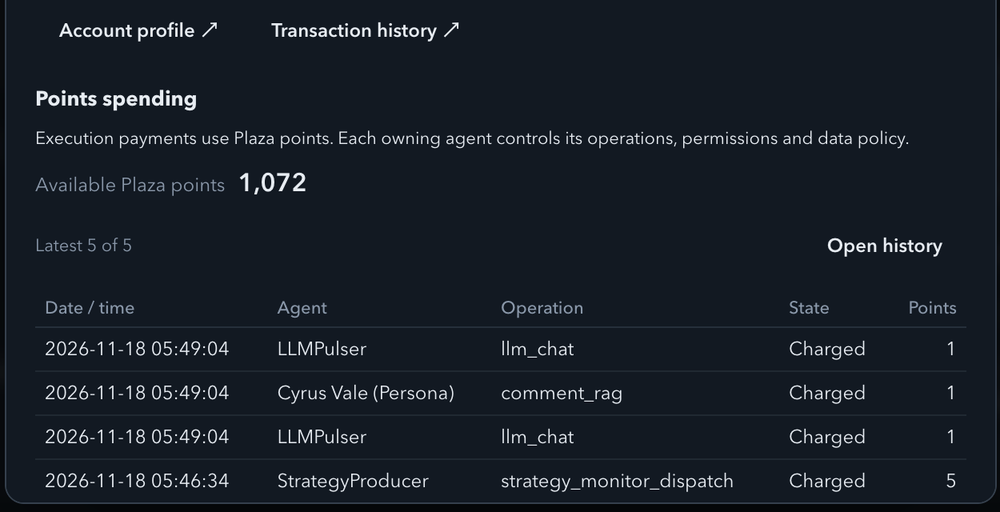
Appendix B: Known limits
- Long backtests may not finish. A 12-month pairs backtest can stall while fetching history. Start with six months or less.
- Backtests ignore commission, transaction tax and slippage. Fills are at the triggering bar's price; single stocks enter 1 share at a time.
- Paper orders are manual. Signals light up; you place and close the paper orders yourself.
- Both stocks need a price at the same time. Markets with different trading hours (for example a Taiwan stock paired with a US stock) may give no spread.
- Some labels aren't translated or are raw. Data source names, news headlines, the Globe's layer list, and some states such as "stale_data" appear as they are.
- The Watch's ESG tab has no data.
- Local yfinance and Local OpenStreetMap don't run on Intel Macs. Nor on iPhone, iPad or computers you can't install software on; use your own key, such as Fugle, instead.
- Strategy Monitor shows the price source as an id. "Price source: local-resource-… (on this computer)" under the Monitor tab is Local yfinance.
- Stadia Maps, MapTiler and Thunderforest tiles need your own key and a paid plan. For free OpenStreetMap maps, install Local OpenStreetMap.
- Data may be delayed or incomplete. tw-001 is a test site: data may be delayed, missing, or reset after notice.
Appendix C: FAQ and help
| If… | Then… |
|---|
| macOS can't verify the developer | System Settings → Privacy & Security → Open Anyway (first time only). |
| Windows protected your PC | More info → Run anyway (first time only). |
| No confirmation email | Check your spam folder. If it still hasn't arrived after a few minutes, choose Send the confirmation email again on the Retis Terminal sign-in screen. |
| A chart or the news says no source is available | Install Local yfinance (see section 2), or add another source that provides that data in Terminal settings → Data sources. If it is installed, check it shows Running in Retis MAS Manager, then reload the browser from its title bar (↻). |
| Retis MAS Manager says "Not offered for this computer" | This computer (for example an Intel Mac) can't run Local yfinance or Local OpenStreetMap. Add a key for a price-history source such as Fugle under Terminal settings → Data sources. |
| You closed the browser tab | Menu bar or tray icon → Open. |
| A view says "This view lost its Phema connection." | Choose Reload view beside it. Saved strategies and backtest reports are kept. |
| A tab says "This Terminal has stopped." | Retis Terminal has quit. Open it again from Applications (Mac) or the Start menu (Windows); it opens in a new tab with your workspace and strategies. |
| An old tab says "Retis Terminal restarted and opened this window in a new tab." | Carry on in the new tab and close the old one. |
| A window says "This window was signed out" | Choose Sign in; its data browsers and strategies come back. |
| Your strategies are gone | They are kept with the Retis Terminal window you made them in; switch back to that tab. Closing the window removes them. |
| The Strategy Monitor says "This Strategy Monitor is full." | Delete strategies or saved backtests you no longer need (see 7.3 and 7.5), then try again. |
| The data source I want isn't listed | Email datasources@retis.ai with the provider's name and the data you need; see section 4. |
| Fugle isn't offered as a price source | Save your Fugle key under Terminal settings → Data sources in the same Retis Terminal window, then reopen Strategy Monitor. |
| Do I need my broker password? | No. The beta only paper trades and never connects to a broker. |
| Where is my data? | Workspaces, layouts, strategies, kept results and keys are on your computer; tw-001 keeps only your account, points and access records. |
Getting help
- Something went wrong: in Retis Terminal, open Retis MAS Manager (see Install Local yfinance for how) and choose Problem report at the top. It saves a report file and shows where (it contains no passwords or keys). Open GitHub Issues, choose Problem, describe what happened and attach the report. You need a free GitHub account. If Retis Terminal won't open, save the report from its "Retis Terminal couldn't start" window: Save Problem Report on a Mac, No on Windows.
- Questions: ask in the Questions category of GitHub Discussions.
- Never post a key, a password, or the
#local-access= part of a link.
Appendix D: Build the Mac and Windows apps from source
Most people should download the installer (see section 1). Retis Terminal's source is published under the MIT license at github.com/retis-ai-sg/retis-terminal-beta. If you want to build it yourself or check the code, these steps build the Mac or Windows installer from source. For the full notes, see BUILDING.md in the repository.
What you need
| Mac | Windows |
|---|
| System | macOS 12 or later; Apple silicon is smoothest | Windows 10 or 11 |
| Python | 3.13, only to run the build (for example brew install python@3.13) | 3.13 (python.org) |
| Node.js | 20 or later, with npm (used only during the build, to prebuild agent views) | 20 or later, with npm |
| Git | Comes with the Xcode Command Line Tools | Git for Windows |
| Also | Xcode Command Line Tools: xcode-select --install | Inno Setup 6; csc from .NET Framework 4.8 comes with Windows |
The build downloads Python 3.13 from python-build-standalone and the libraries in requirements.lock, and checks every file's SHA-256. The app carries its own Python, so the people who use it need neither Python nor Node.js.
Build
Mac (in Terminal):
git clone https://github.com/retis-ai-sg/retis-terminal-beta.git
cd retis-terminal-beta
python3.13 -m venv .venv
source .venv/bin/activate
python -m pip install --require-hashes -r requirements.lock
python desktop/build_desktop_app.py --platform mac
Windows (in Command Prompt):
git clone https://github.com/retis-ai-sg/retis-terminal-beta.git
cd retis-terminal-beta
py -3.13 -m venv .venv
.venv\Scripts\activate
python -m pip install --require-hashes -r requirements.lock
python desktop/build_desktop_app.py --platform windows
- Without the
py launcher, use python -m venv .venv on the third line.
- To build the same app as a downloaded version, switch to that version right after
cd, for example git checkout v0.1.6-beta.
- A Windows clone made at 0.1.4-beta or earlier may hold CRLF files; clone again.
The results go to dist in the repository:
- Mac:
Retis-Terminal-<version>.dmg and its .sha256, holding one Retis Terminal for both Apple silicon and Intel.
- Windows:
Retis-Terminal-Setup-<version>.exe and its .sha256, a per-user installer that needs no administrator rights and follows Windows' display language: English, Traditional Chinese, Simplified Chinese, Japanese, Spanish or French.
Other options: --output picks another folder. The version, the site the app connects to and the update feed come from VERSION.json; --version, --site and --update-feed change them. python desktop/build_desktop_app.py --help lists every option.
Signing
Without options the build is unsigned (ad hoc signed on Mac), so installing it shows the same warning as in section 1. With your own certificates:
- Mac:
--sign-identity "Developer ID Application: …" signs it, and --notary-profile <notarytool keychain profile> notarizes and staples the .dmg.
- Windows:
--windows-sign-command "signtool sign /fd SHA256 … {file}", where {file} is each file to sign.
Compare with the download
Every Retis Terminal carries kit/package-manifest.json, the SHA-256 of every file in the app. After building the same version's source, compare your copy with the one in the downloaded app:
- Mac:
Retis Terminal.app/Contents/Resources/kit/package-manifest.json
- Windows:
%LOCALAPPDATA%\Programs\Retis Terminal\kit\package-manifest.json
python desktop/build_desktop_app.py --compare dist/kit/package-manifest.json "<the downloaded app's package-manifest.json>"
Exactly three files should differ: prebuilt/prebuilt.json, prebuilt/agent-view/container-config.json and prebuilt/agent-view/host-release.json. They record the folder the build ran in, which Retis Terminal replaces with its own location when it starts. Every other file should be the same.
Appendix E: Partner notes
- Fugle MarketData API provides market data for Taiwan stocks and futures. Using Fugle data needs your own key; see Fugle MarketData API plans (partner link) and section 4.
- Futures need a paid plan: futures history needs the Developer or Advanced plan of the Fugle MarketData API; the free plan has no futures candles. On the Developer plan, futures and options history is a trial until 2026/12/31, marked BETA in Fugle's documentation.
- Links marked "partner link" are Retis–Fugle partnership links with a source tag. Retis Terminal doesn't need a Fugle account.
- Retis Terminal is developed and operated by Retis AI; Fugle only provides the market data API and is not responsible for Retis Terminal's content or features.